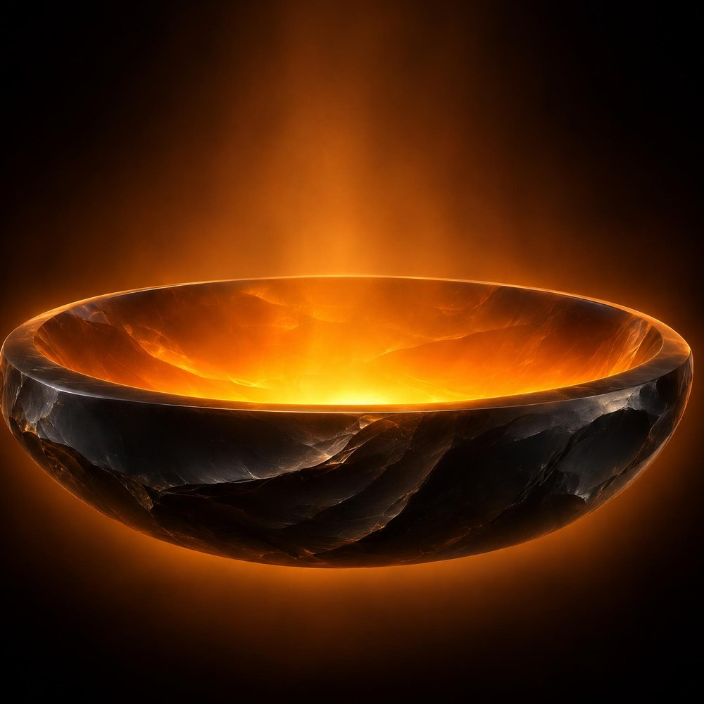

مساء الخير يا
مشاري
الأربعاء 11 نوفمبر · 3 أشياء تحتاجكم اليوم
هلا مشاري! وش أقدر أسوي لكم اليوم؟

أسرع طريقة تبدون فيها
ارموا أي شي
PDF
صورة
رسالة
رابط
فويس
اسحبوها لأي مكان بالموقع
أو اضغطوا هنا ·
Ctrl V
للصق
تعلّموا Wesync
· 10/16
الدرس الجاي: أضيفوا أول دراسة
أول أسبوع
3/5
ادعوا فريقكم
٣ أعضاء انضموا
اكتبوا موضوعكم
الاحتراق الوظيفي لدى ممرضي العناية
ادعوا المشرف/ة
د. إسراء انضمت
4
أضيفوا أول دراسة
الخطوة الحين
دوّروا دراسة وحدة عن موضوعكم وحطوها بالمكتبة. وحدة وكافي.
أضيفوا أول دراسة
ارموا PDF
5
عبّوا أول صف بجدول الأدبيات
وش علينا اليوم؟
0
من
3
خلصت بدليل
الكل
ابحث عن ٥ دراسات سابقة
متأخرة ٥ أيام
م
مكتبة الأدلة
0
من
5
دراسات
علّمتوها خلصت بدون دليل
أضيفوا الدليل
عبّوا جدول الأدبيات
الخميس
ر
جدول الأدبيات
2
من
5
صفوف
اكتبوا خلفية البحث
الأحد
أ
خلفية البحث
أضف مهمة لليوم… واكتب وين الشغل
Enter